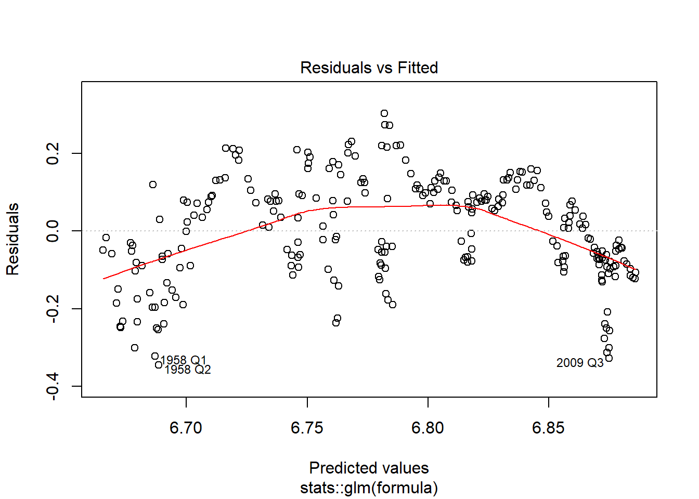
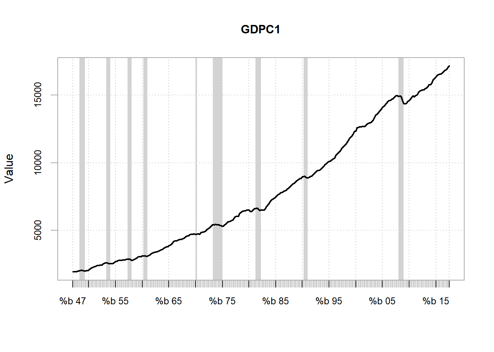
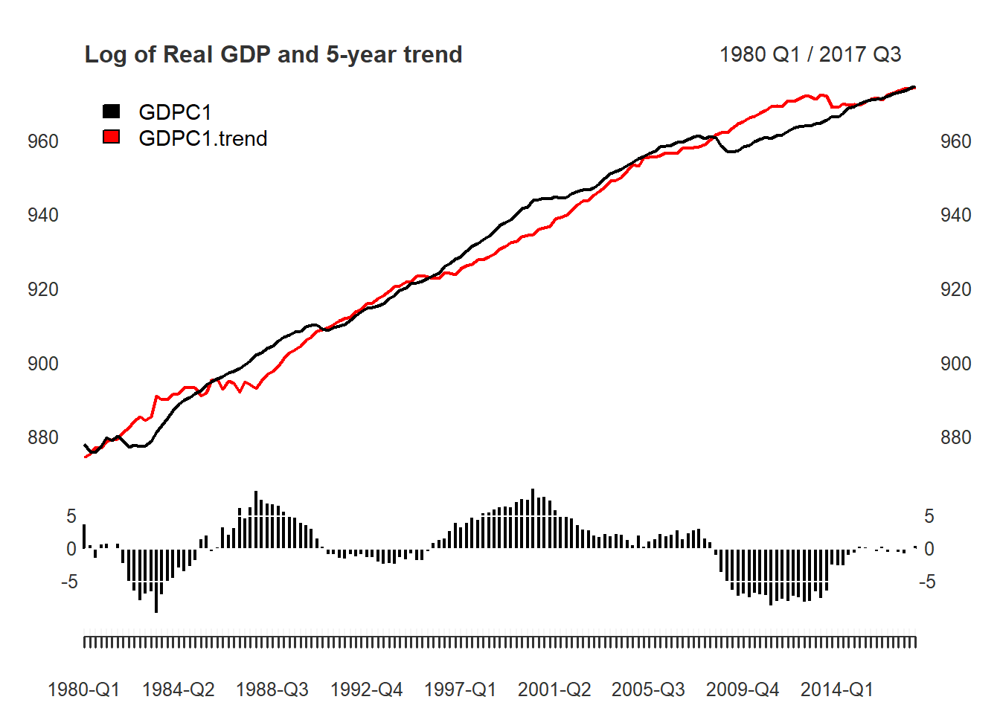
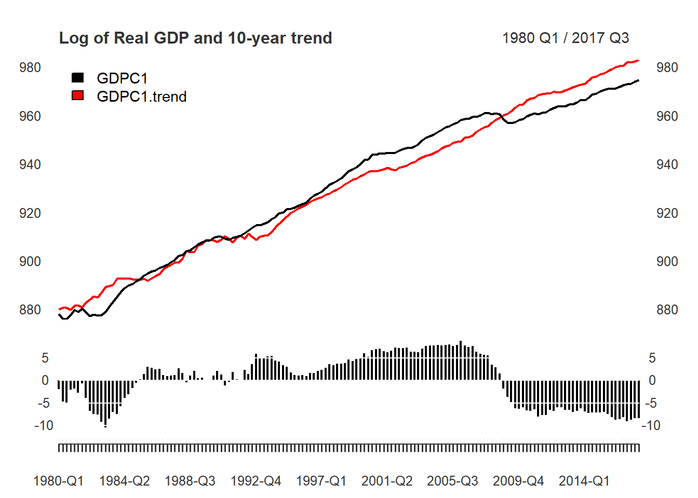
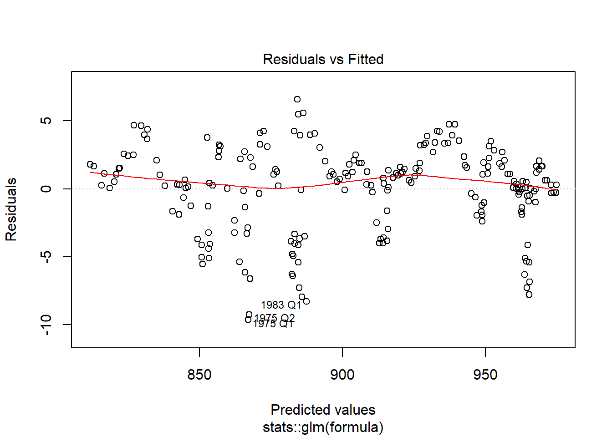
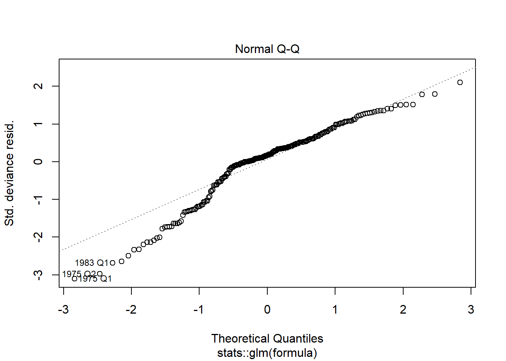
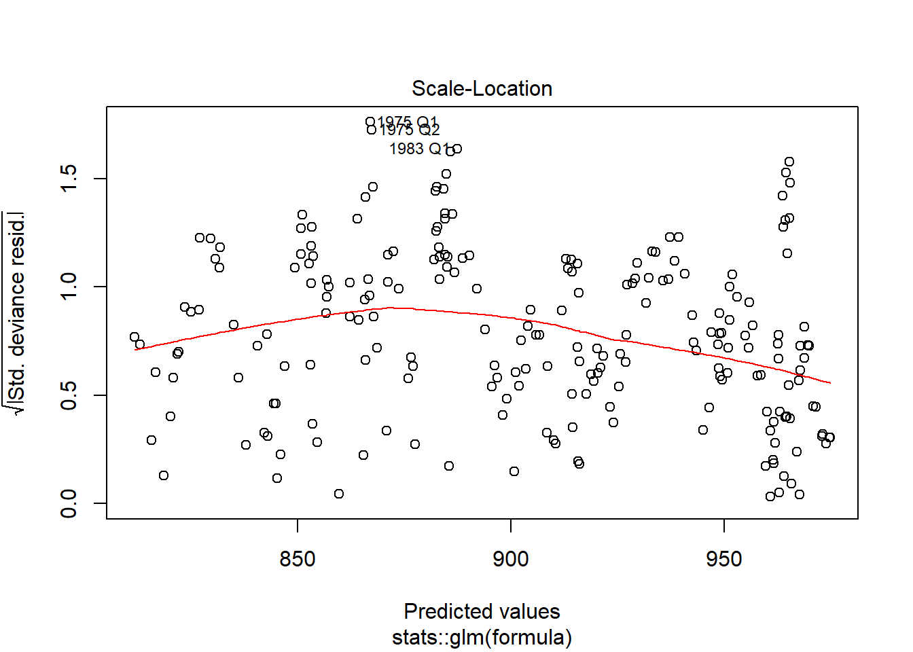

Additional examples
Justin M Shea
library(xts)
library(knitr)
library(neverhpfilter)yth_filtered
The function outputs an xts object of relevant series discussed in Hamilton (2017). They are the original, trend, cycle, and random walk series.
data(GDPC1)
log_RGDP <- 100*log(GDPC1)
gdp_filtered <- yth_filter(log_RGDP, h = 8, p = 4)
kable(tail(gdp_filtered, 8))| GDPC1 | GDPC1.trend | GDPC1.cycle | GDPC1.random |
|---|---|---|---|
| 971.3998 | 971.0746 | 0.32512275 | 4.661666 |
| 971.5444 | 970.4246 | 1.11980556 | 5.036787 |
| 972.0977 | 971.9094 | 0.18831943 | 4.465194 |
| 972.7833 | 973.3109 | -0.52760922 | 3.880684 |
| 973.2190 | 973.2501 | -0.03104638 | 3.817619 |
| 973.5261 | 974.1597 | -0.63363121 | 3.327926 |
| 974.2795 | 974.9659 | -0.68630695 | 3.405300 |
| 975.0563 | 975.2427 | -0.18635065 | 3.777707 |
As the output is an xts object, it can be easily graphed with plot.xts. Note the panels argument, which I use to plot the cycle component.
main <- "Log of Real GDP (GDPC1) and trend"
plot(gdp_filtered["1950/"][,1:2], grid.col = "white", legend.loc = "topleft", main = main, panels = 'lines(gdp_filtered["1950/"][,3], type="h", on=NA)')
While xts has many useful functions for handling time series, one can extend the use of this class further with packages such as PerformanceAnalytics, Recession bars are created easily with the period.areas argument of the chart.TimeSeries function.
library(PerformanceAnalytics)
qtr_recc <- to.quarterly(USREC["1947-1/2017-3"], OHLC=FALSE)
start <- index(qtr_recc[which(diff(qtr_recc$USREC)==1)])
end <- index(qtr_recc[which(diff(qtr_recc$USREC)==-1)])
Recessions <- paste(format(start,"%Y-%q"), format(end,"%Y-%q"), sep="/")
main <- "Log of Real GDP (GDPC1) and trend"
chart.TimeSeries(gdp_filtered[,1:2], main = main, date.format = "%Y", period.areas = Recessions, period.color="lightgrey", lwd=2)
Choices for h and p
While Hamilton converts the PAYEMS series into quarterly periodicity and then uses the default parameters of h = 8 and p = 4, one can choose to retain the monthly series and adjust the parameters to h = 24 and p = 12.
Employment_log <- 100*log(PAYEMS["1950/"])
employment_cycle <- yth_filter(Employment_log, h = 24, p = 12, output = "cycle")
main <- "Log of Employment cycle"
cols <- c("darkred", "darkgreen")[(employment_cycle > 0) + 1]
plot(employment_cycle, grid.col = "white", type = "h", col = cols, main = main)
abline(h=0)
One may wish to consider longer-term cycles by extending h. Below is an example of taking h from 8 quarters or 2 years, to 20 quarters (5 years), and then 40 quarters (10 years).
gdp_5yr <- yth_filter(log_RGDP, h = 20, p = 4, output = c("x", "trend", "cycle"))
main <- "Log of Real GDP and 5-year trend "
plot(gdp_5yr["1980/"][,1:2], grid.col = "white", legend.loc = "topleft", main = main, panels = 'lines(gdp_5yr["1980/"][,3], type="h", on=NA)')
gdp_10yr <- yth_filter(log_RGDP, h = 40, p = 4, output = c("x", "trend",
"cycle"))
main <- "Log of Real GDP and 10-year trend "
plot(gdp_10yr["1980/"][,1:2], grid.col = "white", legend.loc = "topleft", main = main, panels = 'lines(gdp_10yr["1980/"][,3], type="h", on=NA)')
yth_glm
The yth_glm function returns an object of class glm. Thus, one can use all generic functions associated with objects of that class. Here is an example of passing the results of a yth_glm model to the plot function.
gdp_model <- yth_glm(log_RGDP["1960/"], h = 8, p = 4)
plot(gdp_model)
Optional parameters supported by the glm function can be used as well. An example using a different error distribution, defined with the family argument, is illustrated below.
gdp_poisson <- yth_glm(log_RGDP["1960/"], h = 8, p = 4, family = poisson)
summary(gdp_poisson)##
## Call:
## stats::glm(formula = formula, family = ..1, data = data)
##
## Deviance Residuals:
## Min 1Q Median 3Q Max
## -0.308987 -0.065467 0.008832 0.078788 0.256634
##
## Coefficients:
## Estimate Std. Error z value Pr(>|z|)
## (Intercept) 5.8404587 0.0445344 131.145 <2e-16 ***
## xt_0 0.0015351 0.0029749 0.516 0.606
## xt_1 -0.0004309 0.0047672 -0.090 0.928
## xt_2 -0.0002559 0.0047611 -0.054 0.957
## xt_3 0.0002261 0.0029419 0.077 0.939
## ---
## Signif. codes: 0 '***' 0.001 '**' 0.01 '*' 0.05 '.' 0.1 ' ' 1
##
## (Dispersion parameter for poisson family taken to be 1)
##
## Null deviance: 531.922 on 219 degrees of freedom
## Residual deviance: 2.565 on 215 degrees of freedom
## (11 observations deleted due to missingness)
## AIC: Inf
##
## Number of Fisher Scoring iterations: 3